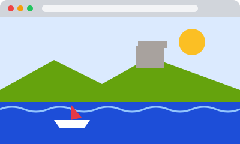
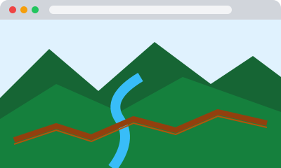

Os meus projetos
Aqui partilho os projetos que construí até ao momento durante a minha formação de desenvolvimento web:
Portefólio Pessoal

Este mesmo site, construído de raiz com HTML5 semântico, estilizado com folha de estilo externa CSS3 e versionado no GitHub. Tecnologias: HTML5, CSS3, Git, GitHub
A minha cidade

Uma página dedicada a setúbal, com ilustrações SVG, dados históricos, tabela cultural e formulário de sugestões validado. Tecnologias: HTML5, CSS3, SVG
Passadiços do Paiva

Página de turismo e conservação ambiental com galeria informativa e sistema de reserva com regras rigorosas de validação nativa. Tecnologias: HTML5, Metadados SEO, CSS3
Os Elétricos de Lisboa

Página sobre as linhas de elétrico mais conhecidas de Lisboa, com cartões, etiquetas e uma paleta inspirada nos elétricos amarelos. Tecnologias: HTML5, CSS3, Google Fonts
Uma visão geral das tecnologias e do estado atual de cada trabalho:
| Projeto | Tecnologias | Ano | Estado |
|---|---|---|---|
| Portefólio Pessoal | HTML5, CSS3, Git, GitHub | 2026 | Em desenvolvimento |
| A Minha Cidade | HTML5, CSS3, SVG | 2026 | Concluído |
| Os Elétricos de Lisboa | HTML5, CSS3, Google Fonts | 2026 | Concluído |